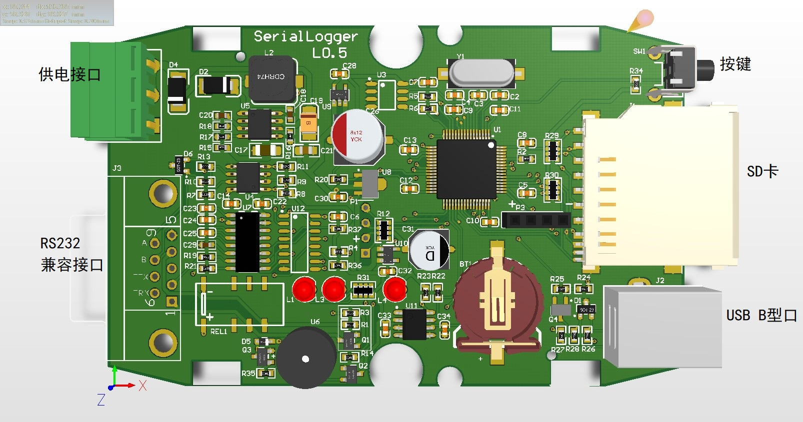
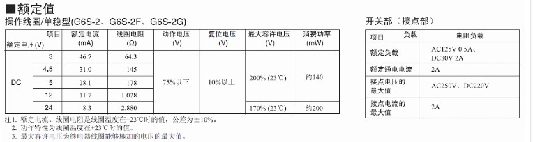
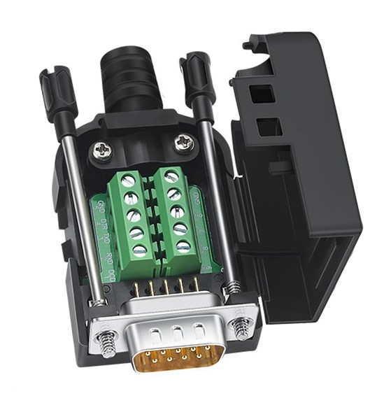
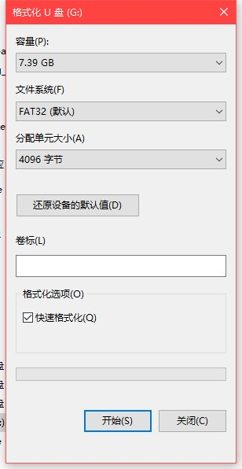
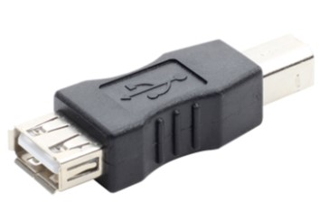

多功能串口数据记录仪硬件手册¶

接口¶
多功能串口记录仪 右侧接口分别为：
- 按键
- SD卡槽
- USB B型接口
多功能串口记录仪 左侧接口分别为：
9~24Vdc 供电接口
9Pin兼容RS232协议的通信接口
- 继电器COM端/OD输出
- RS232 TX
- RS232 RX
- 继电器常开常闭/GND
- GND
- TTL RX
- TTL TX
- RS485 B
- RS485 A
注解
1,4 脚的功能依据具体设备型号尾号不同，可以选择为：
- SERLGR-ro: 1 - 继电器COM端 4 - 继电器常开
- SERLGR-rc: 1 - 继电器COM端 4 - 继电器常闭
- SERLGR-on: 1 - NPN OD端 4 - GND
继电器参数为：

警告
由于通信接口使用兼容RS232协议的DB9，所以其他功能端子也通过DB9的除2，3，5脚之外的其他引脚引出。必要时，可以使用RS232免焊接扩展模块进行扩展使用。

工作模式¶
多功能串口记录仪 共有3种工作模式：设置模式，记录模式，读取模式。
设置模式¶
设置模式下，连接USB至PC，将在PC端增加新的串口设备，通过该串口可以对 多功能串口记录仪 进行设置。 所有设置信息记录至EEPROM。
进入方法¶
设备重启或上电时，SD卡未插入卡槽。
指示灯¶
模式指示灯显示为 红色
设置方法和指令¶
连接设备
- 按照上述方法连接 多功能串口记录仪, 并确保进入设置模式
- 安装驱动程序。 Win7系统请下载：
Win7串口驱动。Win10系统免安装- 使用secureCRT 或其他串口工具连接新增加的串口。 通信参数为： 38400 8N1
- 输入指令
- 设置指令
- 请参考 `多功能串口记录仪配置参考`_
SD卡初始化¶
如果需要长时间记录数据，推荐使用
宽温度范围，SLC工艺的工业SD卡。 比如Apacer,Transcend,InnoDisk,SolidGear。多功能串口记录仪 最大支持32GB的SD卡。在插入 多功能串口记录仪 前，务必格式化成 FAT32格式。

供电与取电¶
多功能串口记录仪 左侧供电接口支持 9~24Vdc供电，满足大部分工业使用需求。在使用左侧供电口供电时，右侧USB接口可以输出 5V 2A的电流。对于需要外接其他5V设备的场合，可以从此口取电。

USB打印机转换头
智能重启¶
为了方便 多功能串口记录仪 操作，通过按键可以快速重启，以便在3种模式间快速切换。
在任何一种模式下， 长按按键 3秒，重启指示灯点亮，抬起按键，指示灯闪烁，2秒钟后设备重新启动。在此2秒钟内，需要完成 SD卡或者按键操作，以使 多功能串口记录仪 重启后顺利进入对应模式。
文件新建¶
在记录模式下，短按一次按键， 多功能串口记录仪 会关闭当前记录文件，新的数据将新建一个文件进行记录。